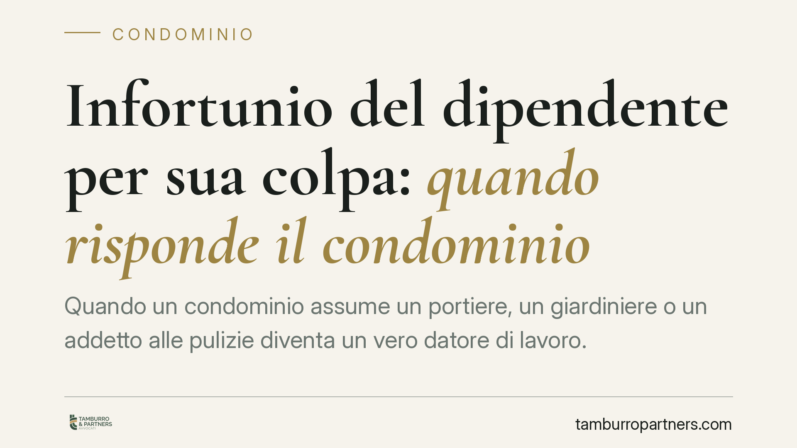

Infortunio del dipendente per sua colpa: quando risponde il condominio
Quando un condominio assume un portiere, un giardiniere o un addetto alle pulizie diventa un vero datore di lavoro. Ne consegue l'obbligo di tutelare la salute e la sicurezza del dipendente, anche se questi si infortuna per propria imprudenza. Un principio con ricadute concrete per amministratori e condòmini, che possono rispondere in solido delle conseguenze.

Il condominio è un datore di lavoro a tutti gli effetti
Quando un condominio instaura un rapporto di lavoro subordinato, assume la qualifica di datore di lavoro. La circostanza è frequente: portieri, addetti alla pulizia delle scale, giardinieri, manutentori stabilmente assunti. Da quel momento scattano tutti gli obblighi previsti dal Testo Unico sulla sicurezza, il D.lgs. 81/2008.
Non si tratta di un adempimento formale. L'amministratore, in qualità di rappresentante del condominio, deve attivarsi concretamente: valutazione dei rischi, fornitura dei dispositivi di protezione individuale (DPI), formazione del lavoratore, sorveglianza sanitaria ove prevista.
Inquadramento normativo
L'articolo 2087 del Codice civile impone al datore di lavoro di adottare tutte le misure che, secondo la particolarità del lavoro, l'esperienza e la tecnica, siano necessarie a tutelare l'integrità fisica del prestatore. È una norma di chiusura, molto ampia.
Il D.lgs. 81/2008 specifica gli obblighi: l'art. 17 individua gli adempimenti non delegabili (valutazione dei rischi e nomina del responsabile del servizio di prevenzione), mentre gli artt. 18 e seguenti dettagliano i doveri operativi. In sede penale, l'eventuale infortunio può integrare i reati di lesioni colpose (art. 590 c.p.) o omicidio colposo (art. 589 c.p.), aggravati dalla violazione delle norme antinfortunistiche.
La giurisprudenza consolidata della Corte di Cassazione Penale ha chiarito un punto decisivo: la condotta imprudente del lavoratore non esonera di per sé il datore di lavoro. Il datore risponde anche quando il dipendente ha tenuto un comportamento negligente o disattento, perché la normativa mira a proteggere il lavoratore proprio dalla sua stessa possibile disattenzione, frutto della ripetitività dei gesti.
Il limite: il rischio eccentrico
Esiste però un confine. La responsabilità del datore viene meno quando l'infortunio deriva da un comportamento del lavoratore del tutto abnorme, imprevedibile ed estraneo alle mansioni affidate. È il cosiddetto rischio eccentrico (o esorbitante): una condotta che esce completamente dal perimetro dell'attività lavorativa e che nessuna misura di prevenzione avrebbe potuto evitare.
In pratica, la differenza è questa. Se il giardiniere si ferisce usando male un attrezzo di lavoro, il condominio tendenzialmente risponde. Se invece il dipendente compie un'azione completamente slegata dai suoi compiti, in un contesto non riconducibile al lavoro, la catena causale si interrompe e il datore può andare esente.
Implicazioni pratiche per amministratori e condòmini
La conseguenza più delicata riguarda i condòmini. In ambito civilistico e risarcitorio, il condominio risponde con il suo patrimonio, ma le obbligazioni possono ricadere sui singoli partecipanti secondo le quote millesimali. Un infortunio grave non coperto adeguatamente può quindi tradursi in esborsi diretti.
Sul piano penale, invece, la responsabilità è personale. Chi risponde del reato è di norma l'amministratore quale soggetto investito dei poteri gestori e di spesa, salvo deleghe formali e valide a terzi qualificati. Il condomino estraneo alla gestione non è penalmente responsabile per il semplice fatto di partecipare al condominio.
Attenzione anche alla posizione dell'amministratore che non attiva le procedure di sicurezza per contenere i costi o per inerzia: è proprio in questi casi che si concentra il rischio penale.
Cosa fare in concreto
- Verificate l'esistenza del documento di valutazione dei rischi (DVR). Se il condominio ha dipendenti e non lo possiede, è una lacuna da colmare con urgenza.
- Formalizzate la formazione e la consegna dei DPI. Conservate la documentazione firmata: in giudizio conta la prova degli adempimenti, non le buone intenzioni.
- Stipulate o aggiornate una polizza assicurativa adeguata a coprire la responsabilità civile verso i prestatori di lavoro, oltre alla copertura INAIL obbligatoria.
- Valutate deleghe di funzioni scritte e verso soggetti competenti quando la gestione della sicurezza richiede professionalità specifiche.
- Convocate l'assemblea per deliberare le spese necessarie alla messa in sicurezza: l'inerzia gestionale è essa stessa fonte di responsabilità.
La materia incrocia tre piani — lavoristico, penale e condominiale — che vanno letti insieme. Consigliamo una verifica preventiva della posizione del condominio datore di lavoro, prima che un evento trasformi un obbligo trascurato in un procedimento.
---
*Contributo informativo a cura di Tamburro & Partners - Avv. Giuseppe Tamburro. Non costituisce parere legale.*
Ogni condominio ha una storia a sé.
Se gestisci un'amministrazione e vuoi un confronto su una specifica questione condominiale, scrivi allo studio. Ti rispondiamo entro un giorno lavorativo.